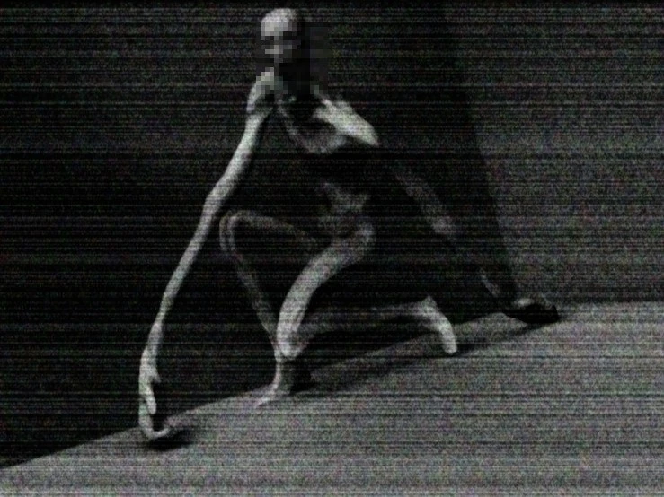

Ruby OSNR
Ruby OSNR
Ruby OSNR
Ruby OSNR
SCP-096, known as "The Shy Guy," is a humanoid anomaly feared not for its appearance, but for the devastating consequences of witnessing its face. Normally passive and reclusive, it enters a blind, uncontrollable rage the moment someone glimpses its face be it in person, photograph, or video relentlessly pursuing the viewer across any distance until they are killed. Afterward, it calms and returns to its docile state, seemingly unaware of the destruction it leaves behind. SCP-096 embodies the terror of forbidden knowledge an unstoppable curse triggered by mere observation.
| Trait | Description |
|---|---|
| Appearance | Tall, emaciated humanoid with pale skin, long limbs, and no visible hair. Its face is normally hidden or distorted in footage due to anomalous effects. |
| Abilities | Enters an unstoppable, hyper-aggressive state when someone views its face, whether directly or via media. Possesses superhuman speed, strength, and endurance while enraged. |
| Modus Operandi | Typically docile, SCP-096 only reacts when its face is seen. Once triggered, it relentlessly hunts the viewer, regardless of distance, until they are terminated then returns to its passive state. |
| Symbolism | Fear of exposure and surveillance, consequences of curiosity, and the inescapability of certain threats once knowledge is gained a modern myth of taboo and inevitability. |
Beyond its lethal trigger, SCP-096 raises disturbing questions about ethics and containment within the SCP Foundation. Despite efforts to suppress its image, the inevitability of accidental exposure looms, making it a ticking time bomb. The Foundation's attempts to control it from specialized containment cells to experimental termination methods highlight humanity's desperate struggle to manage what it doesn’t fully understand. SCP-096 isn't just a monster; it’s a symbol of how even passive dangers can become catastrophic under the wrong conditions.
